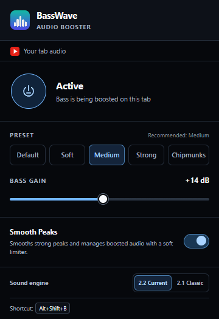

01
Five clear presets
Default, Soft, Medium, Strong, and Chipmunks give you a starting point for different listening moods. Medium is the recommended +14 dB setting.
Shape bass and clarity on eligible Chrome tabs with five presets, a manual gain slider, Smooth Peaks, and your choice of 2.2 or 2.1 Classic sound. Audio stays on your device.

Keep the sound you want without adding another audio app, account, or complicated setup.
Default, Soft, Medium, Strong, and Chipmunks give you a starting point for different listening moods. Medium is the recommended +14 dB setting.
Adjust bass gain from 0 to +30 dB and fine-tune each eligible tab without leaving the popup.
Compression, soft clipping, and Smooth Peaks help manage peaks as you adjust the sound.
Keep different presets and gain levels for different tabs. The popup shows the site icon and title, with clear active status in the toolbar.
Toggle BassWave with Alt+Shift+B.
Your tab audio is processed in your browser. BassWave does not upload audio, use analytics, or require an account.
Prefer the original behavior? Switch from the current 2.2 engine to 2.1 Classic directly in the popup.
Each preset has a defined sound, and Medium is the recommended starting point. Use the bass-gain slider when you want to go beyond the preset value.
No external software, audio cable, or account setup.
Add BassWave to Chrome from the Chrome Web Store. The icon appears in your toolbar.
Open a Chrome tab with audio that Chrome allows BassWave to capture.
Open BassWave, turn it on, choose a preset, and adjust the bass gain. Keep the 2.2 engine or switch to 2.1 Classic.
BassWave shapes the bass and clarity of eligible Chrome tabs. It combines five presets, a manual bass-gain slider, Smooth Peaks, compression, and soft clipping.
BassWave works with tabs that are playing audio and that Chrome allows the extension to capture. It does not support chrome:// pages, file:// pages, the Chrome Web Store, or streams already captured by another extension.
Default adds no bass boost and applies +4 dB volume with added clarity. Soft adds +8 dB, Medium +14 dB, and Strong +22 dB. Chipmunks adds +8 dB with a slight pitch shift. Medium is the recommended starting point.
Yes. The popup includes a sound-engine selector. Keep 2.2 Current for smoother parameter changes and a safety limiter in the signal path, or choose 2.1 Classic to preserve the original sound behavior. In 2.1 Classic, turning Smooth Peaks off also bypasses peak limiting, so reduce bass gain if the audio distorts.
No. Bass boost and higher volume can make existing distortion more noticeable. Smooth Peaks, compression, and soft clipping help manage peaks, but they cannot guarantee distortion-free audio in every source or listening setup.
No. BassWave processes audio locally in your browser. It does not require an account, use analytics, or upload audio.
Yes. Each eligible tab keeps its own processing state, preset, and gain while the extension is running. Closing or navigating away from a tab stops its processing.
Choose a preset, tune the gain, pick 2.2 or 2.1 Classic, and keep audio processing on your device.
Add to Chrome — Free